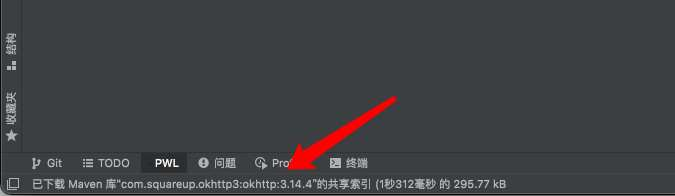

IDEA插件开发-发送事件日志(eventLog)
- 作者:
- 淡白
- 创建时间：
- 2021-11-28 18:32:05
- IDEA 插件开发
摘要：这段代码实现了在 IntelliJ IDEA 插件中发送通知的功能。首先，通过 `NotificationGroupManager.getInstance().getNotificationGroup("com.github.danbai225.pwlchat.notify")` 获取到通知组，并使用 `createNotification()` 创建一个通知实例。然后，通过 `setTitle()` 设置通知的标题，并使用 `notify()` 方法发送通知。 在 `plugin.xml` 中，需要添加一个通知组的注册，例如： ```xml <notificationGroup id="com.github.danbai225.pwlchat.notify" displayType="NONE"/> ``` 其中，`displayType` 属性可以决定通知的显示方式。 你可以在[这里](https://github.com/danbai225/pwl-chat/blob/main/src/main/kotlin/com/github/danbai225/pwlchat/notify/Notification.kt)找到完整的代码。
想把文字展示到这个位置，但是没有找到直接的方法。  后发现用过事件日志可以实现，于是把消息写入事件日志。 代码如下:
fun sendNotify(project: Project, title: String?, content: String?, type: NotificationType?) {
NotificationGroupManager.getInstance().getNotificationGroup("com.github.danbai225.pwlchat.notify")
.createNotification(content!!, type!!)
.setTitle(title)
.notify(project)
}
需要注册一个组
在plugin.xml下添加
<notificationGroup id="com.github.danbai225.pwlchat.notify" displayType="NONE"/>
displayType类型可以决定消息出现的方式